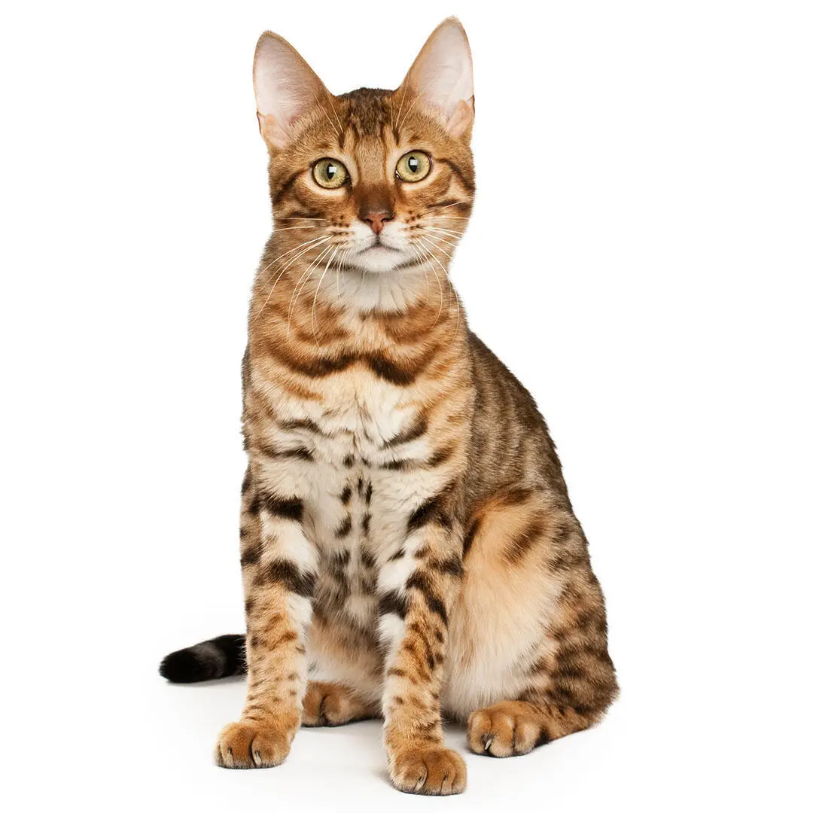
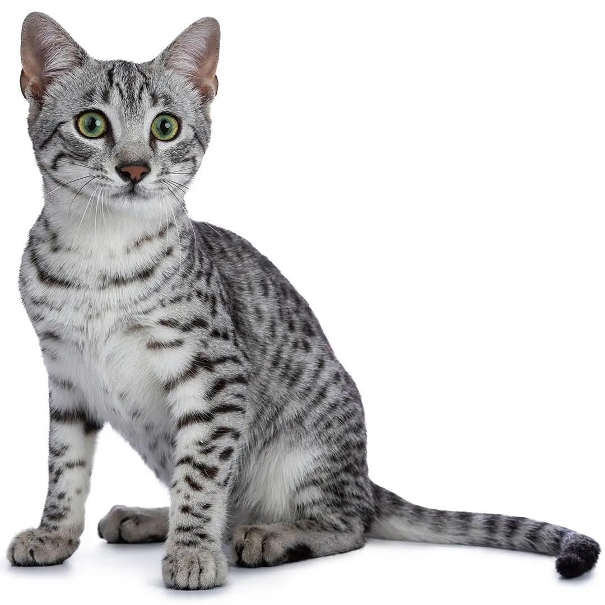
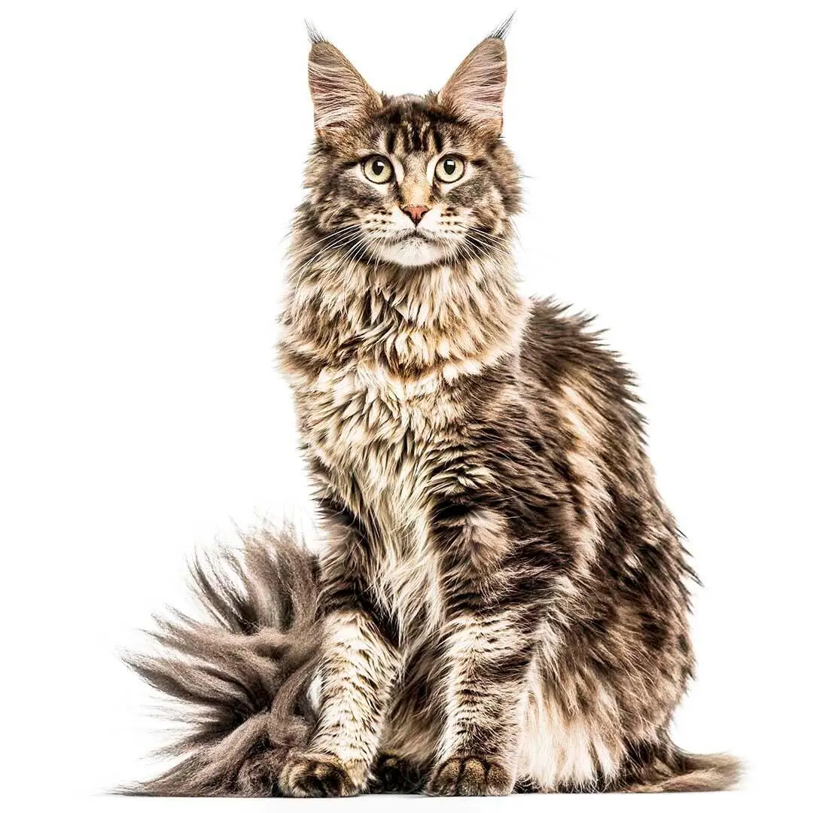
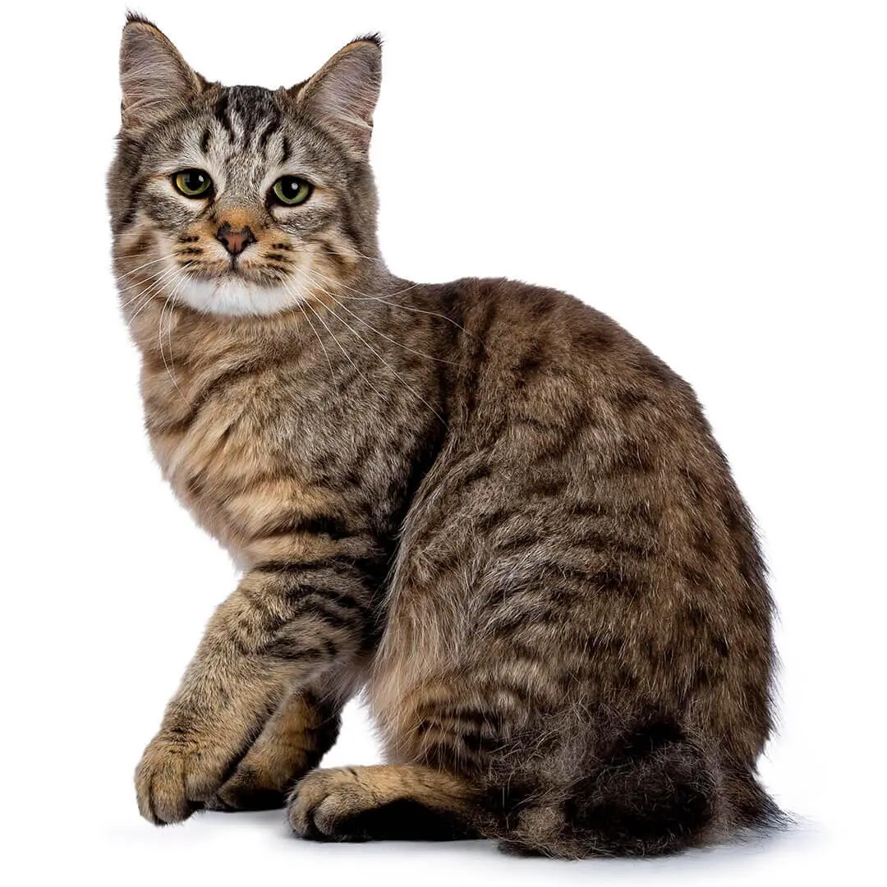
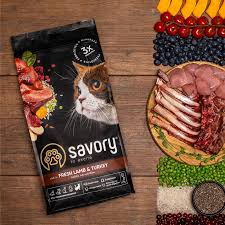
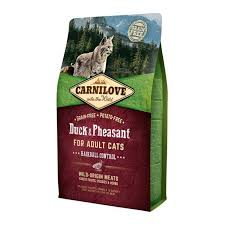
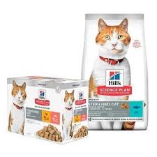

Бенгальські кішки великі, гнучкі, з добре розвиненою м'язовою системою і товстим, зазвичай низько опущеним хвостом. Особливої чарівності дикій зовнішності бенгальських кішок додає щільна і розкішно плямиста або мармурова шерсть. Голова широка, з маленькими вухами та виступальними подушечками вібрисів; мигдалеподібні очі з чорним обідком. Хвіст товстий, тоншає в напрямку до чорного кінчика. У жодної іншої породи немає ефекту напилення (блиску), який зустрічається в деяких бенгальських котів. А через високий рівень активності підтримання такого блиску може вимагати від власника дуже багато уваги.
Коти породи єгипетська мау елегантні, мають атлетичний вигляд, вирізняються хаотичним плямистим забарвленням. Говорять, що кішки мау мають унікальний «стурбований» вираз мордочки.
Найбільша з усіх порід кішок, мейн-кун має сильне тіло з добре розвиненими м'язами та міцними лапами. У них квадратна морда з великими широко посадженими вухами. Хутро довге й щільне, підшерстя вкрите блискучою товстою та водонепроникною верхньою шерстю. Шерсть на голові, шиї та плечах коротша та подовжується в напрямку хвоста та боків. На животі та «галіфе» шерсть густа і космата. На шиї є комір від самої основи вух, і в самців він більший і важчий. На хвості шерсть довга і спадає наче хвилями. На вухах китиці. На лапах є жмутки, тому вони нагадують снігоступи. Порода кішок мейн-кун може мати понад 30 варіантів забарвлення. Очі бувають зелені, золотаві чи мідні — а в білих котів зустрічаються голубі чи різнокольорові очі.
Піксибоб — це порода великих кішок, що дуже нагадують руду рись, а їхньою найвизначнішою рисою є короткий хвіст (хоча хвоста може не бути майже взагалі, він може бути коротким або навіть довгим). Тіло м'язисте, морда грушоподібної форми, на вухах — китиці. Пухнасте хутро не прилягає до тіла і має плямисте забарвлення або легкий відтінок на рудуватому фоні. Більшість кішок породи піксибоб мають чорну шерсть та шкіру на подушечках лап, вуха з тикінгом, багато вушного волосся, чорні губи та білу шерсть довкола очей з білою шкірою на очах. Більшість із них короткошерсті, але зустрічаються й довгошерсті. Очі золоті або зеленувато-золоті. Піксибоб — це одна з небагатьох порід, у стандартах якої допускають полідактилію (зайві пальці на лапах), максимально — сім пальців.
Бренд корму класу холістик, який виробляється у Бельгії та Чехії. Це якісні збалансовані варіанти харчування для котів будь-яких порід та вікових груп. Має лінійки лікувальних та профілактичних кормів із спеціально розробленим складом.
Якісний корм для котів класу холістик, який виготовляється в Чехії. Відрізняється від інших кормів особливостями свого складу, оскільки орієнтується на принципи харчування тварин, які були до того, як сформувалося сільське господарство. Тобто використовується м'ясо диких тварин та лісові ягоди, трави. Бренд представлений сухими та вологими кормами, а також смаколиками для котів.
Корм для котів виробляється в Нідерландах та Чехії. Представлений різними лінійками сухих та вологих кормів, консервами та павучами.
